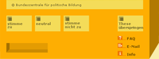

<html>
    <head>
        <title>Wahl-O-Mat - Bundestagswahl 2005</title>
        <link rel=stylesheet type="text/css" href="css/style.css">
        <meta http-equiv="Content-Type" content="text/html; charset=utf-8">
    </head>

    <body background="images/bg2004.gif" bgcolor="#FBF3CC" text="#645F45" link="#000000" vlink="#000000" alink="#000000" leftmargin="0" topmargin="0" marginwidth="0" marginheight="0">
        <script type="text/javascript">
            if ((parent.TOPPY != 1)||(parent.S_nTheseMax<parent.WOMT_nThesen)) {
   	            location.href = "main_app.html";
            }

            S_nSprache=parent.S_nSprache;
            S_nTheseAktuell=parent.S_nTheseAktuell;
            S_nTheseMax=parent.S_nTheseMax;
            S_aThesen=parent.S_aThesen;
            S_aThemen=parent.S_aThemen;
            S_aThemen=parent.S_aThemen;
            S_nLand=parent.S_nLand;
            CONST_ONLINE=parent.CONST_ONLINE;
            CONST_GEWICHTUNG=parent.CONST_GEWICHTUNG;
            WOMT_aLaender=parent.WOMT_aLaender;
            WOMT_aThesenBilder=parent.WOMT_aThesenBilder;
            WOMT_aThesen=parent.WOMT_aThesen;
            WOMT_nThesen=parent.WOMT_nThesen;
            WOMT_nThemen=parent.WOMT_nThemen;
            WOMT_aThemen=parent.WOMT_aThemen;
            WOMT_nTableWidth=parent.WOMT_nTableWidth;
            WOMT_nTexte=parent.WOMT_nTexte;
            WOMT_aParteienLogos=parent.WOMT_aParteienLogos;
            WOMT_nParteien=parent.WOMT_nParteien;
            WOMT_aBilder=parent.WOMT_aBilder;
            WOMT_aTexte=parent.WOMT_aTexte;

            bgcolor_0065CE=' bgcolor="#0065CE" ';
            bgcolor_FFFFFF=' bgcolor="#FFFFFF" ';
            bgcolor_000000=' bgcolor="#000000" ';
            bgcolor_table_bg=' bgcolor="#FFFFFF" ';
            b=S_nTheseAktuell+1;

/*            function change_thema(nr) {
                  alert("Change Thema");
                  val=parent.get_thema(nr);
                  if (val == 1) {
                      parent.set_thema(nr, 0);
                      //document.form_themen.elements['nr'].checked = false;
                  } else {
                      parent.set_thema(nr,1);
                      //document.form_themen.elements[nr].checked=true;
                  }
              }*/

            function change_land(nr) {
                sel = document.forms["themen"].select_land;
                S_nLand = parent.S_nLand = sel.value;
            }

            function ergebnis() {
                if (CONST_GEWICHTUNG == 1) {
					count = WOMT_nThesen;
				} else {
					count = WOMT_nThemen;
				}
                for (a = 0; a < count; a++) {
                    parent.set_thema(a,0);
                }
                parent.replaceIFrame('4');
            }


            function write_2_ergebniszwischen(){
                rw  =   '';
                rw +=   '<center>';
                
				rw += '<table border="0" cellpadding="0" cellspacing="0" width="760">';
				rw += '	<tr>';
				rw += '		<td width="25%" height="60"><a href="http://www.bpb.de" target="_blank"></a></td>';
				rw += '	</tr>';
				rw += '	<tr>';
				rw += '		<td valign="top" colspan="4" height="10"></td>';
				rw += '	</tr>';
				rw += '</table>';


               	rw += '<table border="0" cellpadding="0" cellspacing="0" width="760">';
				rw += '	<tr>';
				rw += '		<td valign="top" width="10"></td>';
				rw += '		<td valign="top" width="503"><table border="0" cellpadding="0" cellspacing="0" width="503" height="260" id="weiss">';
				rw += '				<tr>';
				rw += '					<td valign="top" width="20"></td>';
				rw += '					<td valign="top" width="480" bgcolor="#ffffff">&nbsp;</td>';
				rw += '				</tr>';
				rw += '				<tr>';
				rw += '					<td valign="top" width="20" bgcolor="#ffffff"></td>';
				rw += '					<td valign="top" bgcolor="#ffffff" width="480"><p><!-- beginn gewichtung --><table border="0" cellspacing="0" cellpadding="0">';
				rw += '							<tr>';
				rw += '								<td valign="top"><a href="javascript:ergebnis()";></a></td>';
				rw += '								<td valign="top" width="13"></td>';
				rw += '								<td><a href="javascript:ergebnis();" class="gross">'+WOMT_aTexte['ergzw_direktanzeigen'][S_nSprache]+'</a></td>';
				rw += '							</tr>';
				rw += '							<tr>';
				rw += '								<td valign="top" colspan="3"></td>';
				rw += '							</tr>';
				rw += '							<tr>';
				rw += '								<td valign="top"><a href="javascript:parent.replaceIFrame(3)"></a></td>';
				rw += '								<td valign="top" width="13"></td>';
				rw += '								<td><a href="javascript:parent.replaceIFrame(3)" class="gross">'+WOMT_aTexte['ergzw_thesengewichten'][S_nSprache]+'</a></td>';
				rw += '							</tr>';
				rw += '						</table><p align="right"><a href="javascript:parent.change_frage(' + (WOMT_nThesen - 1) + ');"><b>'+WOMT_aTexte['allg_zurueck'][S_nSprache]+'</b></a>&nbsp;&nbsp;<br><br></td>';
				rw += '						<!-- ende gewichtung -->';
				rw += '				</tr>';
				rw += '			</table><!-- beginn ergebnis -->';
				rw += '		</td>';
				rw += '		<!-- ende ergebnis -->';
				rw += '		<td valign="top" width="17"></td>';
				rw += '		<td valign="top" width="230"></td>';
				rw += '	</tr>';
				rw += '</table><br>';
				
				rw += '	<table border="0" cellpadding="0" cellspacing="0" width="730">';
				rw += '	<tr>';
				rw += '	<td valign="top"><a href="" onClick="parent.popup_impressum();return false;" TARGET="popup_impressum" class="klein">'+WOMT_aTexte["allg_link_impressum"][S_nSprache]+'</a><br></td>';
				rw += '	</tr>';
				rw += '	</table><br>';

				if (parent.CONST_WOM_VERSION_ZDF==1){
					rw += '	<table border="0" cellpadding="5" cellspacing="0" width="730" height="30">';
					rw += '		<tr>';
					rw += '			<td valign="top">';
					rw += 				'<a href="'+WOMT_aTexte["allg_zdf_tv_url"][S_nSprache]+'" target="_blank">';
					rw += 			'</td>';
					rw += '		</tr>';
					rw += '	</table>';
				}

                rw +=   '</center>';

                return rw;
            }

            document.writeln(write_2_ergebniszwischen());
        </script>
    </body>
</html>